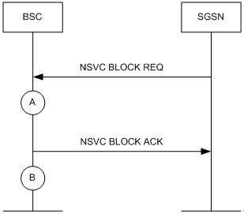

Measurement Counter
L9712: NSVC_TRAN_RX_BLOCK_MSG
Description
This measurement provides the number of BLOCK messages received by the BSC from the SGSN in a granularity period.
The NSVC is blocked through the SGSN under one of the following conditions:
- The physical link on the Gb interface is faulty.
- The data configuration of the physical link is incorrect.
- The NSVC is blocked through the SGSN.
- The data configuration of the NSVC on the BSC side is not consistent with that on the SGSN side.
- The reset is initiated when the Gb interface is blocked.
Unit
Integer number or integer.
Measurement Point
In a granularity period, the counter is incremented by one every time the BSC receives an NSVC BLOCK REQ message on an NSVC from the SGSN (see measurement point A in
Figure 1).
Figure 1 NSVC BLOCK REQ message received by the BSC

Formula
This is an original counter without involving any formula.
Copyright © Huawei Technologies Co., Ltd.